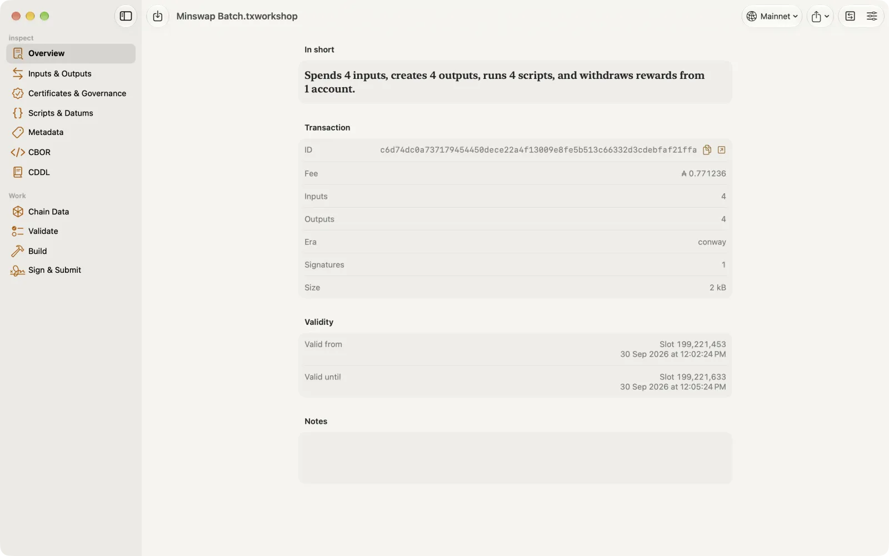
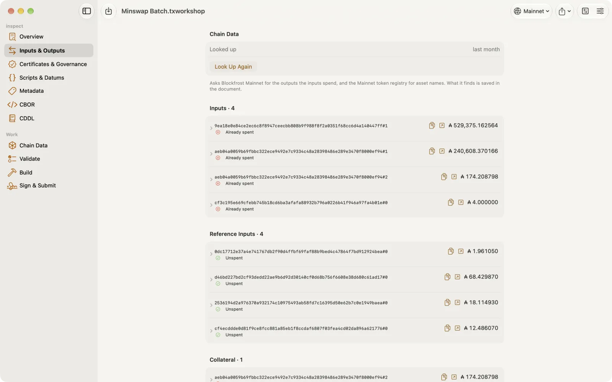
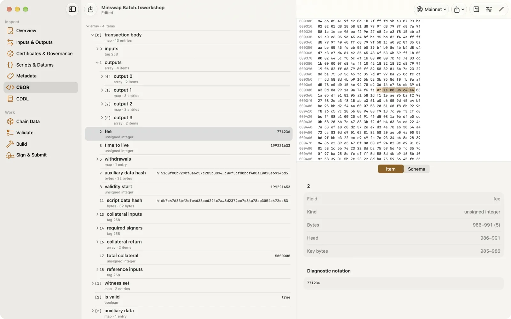
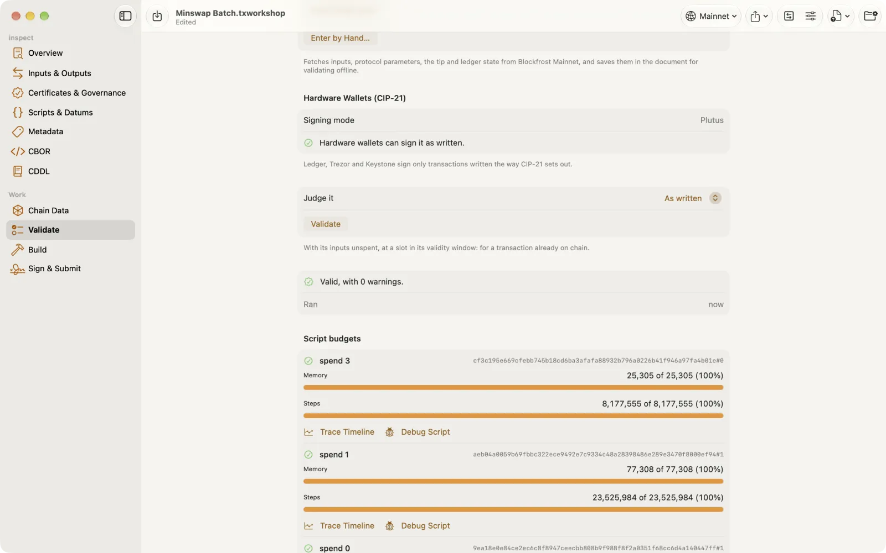
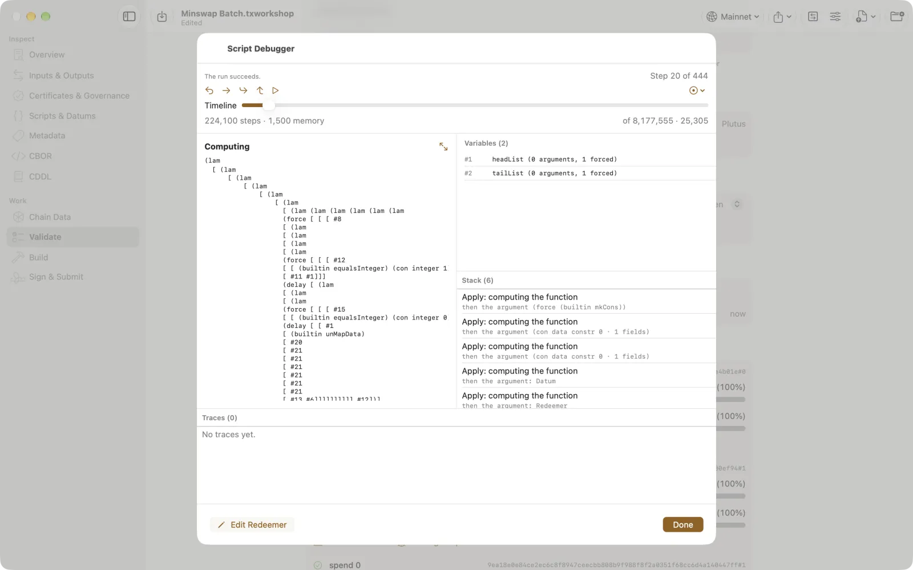

Guide
How to get from a transaction to a confirmed one.
Getting started
Documents
Each piece of work is a .txworkshop document. It holds the transaction exactly as written, the chain data looked up for it, your notes, and the recipe it was built from. Save it anywhere, including iCloud Drive, and reopen it offline later.
Opening a transaction
On a new document's Overview:
- Paste hex, base64 or a cardano-cli text envelope.
- Open from File… or drop a file:
.tx,.signed,.json,.cboror.hex. - Fetch by ID… with a transaction id or an explorer link. It searches mainnet, preprod and preview, through your providers and Koios's public API.
To load another transaction into the same document, choose Replace Transaction… in the toolbar, on any section: it offers the same three ways. Replacing can be undone, and signatures recorded for the old transaction that the new one doesn't carry are dropped.


The network
The network menu in the toolbar says which network the document is on: mainnet, preprod or preview. It picks the provider and places the validity window in time. When you open a transaction, or type addresses to build one, the app sets it from the addresses when they make it clear, and says so when they disagree.
Chain providers
Looking up inputs, validating with chain data, building and submitting need a provider. Add one in Settings › Providers, one per network.
| Provider | What you need |
|---|---|
| Koios | Nothing; an API key is optional |
| Blockfrost | A project id for that network |
| Ogmios, with Kupo | Your server's URL, and Kupo's for faster address lookups |
| Yaci DevKit | Its store URL, for a local devnet |
| Local node (Mac download) | The node's socket path, for example ~/cardano/mainnet/node.socket |
| cardano-cli (Mac download) | The socket path; the app finds cardano-cli in Homebrew, /usr/local/bin, ~/.local/bin or ~/cardano, or you give its path |
The first time there is no provider, Connect to Cardano offers Koios in one tap, and says how to start with the others. API keys go in the Keychain. The node needs to be running and in sync.
Sync with iCloud
Sync with iCloud, in Settings, keeps your providers, their API keys and your block explorer the same on your iPhone, iPad, Mac and Apple Vision Pro. It is off until you turn it on. Turning it on joins each device's providers with the others'; it never replaces them. API keys then go in iCloud Keychain, end-to-end encrypted; signing keys never leave the device. The App Store versions and the Mac download sync with each other. A local node or cardano-cli stays on its Mac.
Chain data
Validating, debugging and building need the protocol parameters and the UTxOs a transaction spends. Chain Data, at the top of the work sections, fetches them from the document's provider: the tip slot, epoch, era and protocol version; the fees, size and execution limits, prices, deposits and cost models; and whether each input's UTxO is there. Without a transaction it fetches the chain alone. Enter by Hand… takes the parameters and UTxOs as JSON or CBOR, for a network no provider reaches. What is fetched is saved in the document, so the work stays repeatable offline. When the debugger or a trace can't run for want of it, Fetch Chain Data is offered there, and they try again.
Inspecting
The sidebar splits the transaction into Overview, Inputs & Outputs, Certificates & Governance, Scripts & Datums, Metadata, CBOR and CDDL. Each field's label sits above its value. Addresses, transaction ids, key hashes and other hashes each have a copy button beside them, next to the button that opens them in your block explorer.
Inputs and outputs
Look Up Inputs & Names on Inputs & Outputs fetches what each input spends, with token names, and saves it in the document so it works offline later.


Certificates and governance
Certificates & Governance shows every field of each certificate, as Build asks for them: a pool registration's id, cold and VRF key hashes, pledge, cost, margin, reward account, owners, relays and metadata; a delegation's stake address, pool and DRep; deposits, refunds and anchors. The transaction's votes and proposals are listed there too.
CBOR and CDDL
CBOR ties every item of the transaction to its bytes and names each field. Encoding that isn't canonical is flagged. CDDL checks any item against the ledger's schema for its era.
To change the bytes themselves, choose Edit All Bytes…, or select an item and choose Edit Selected Bytes…, and type hex. It says before you apply whether the bytes still decode, and where decoding would stop. Bytes in the transaction body are part of its id: changing them makes a new id, and the signatures already there no longer match. Undo takes the change back.


Comparing transactions
Compare With…, in the toolbar, sets the document's transaction beside another: paste hex, base64 or a text envelope, or open a transaction file. The changes are grouped by section and read from this document to the other, each as what it was and what it is now. Two copies of one transaction, one unsigned and one signed, show as the same body and id with only the witnesses different.
Block explorers
The small arrow next to a transaction id, address, stake account, pool, DRep, governance action or asset opens it in your block explorer. Choose it in Settings: Cardanoscan, Cexplorer, AdaStat, DRepTalk, eUTxO, Pool PM or PoolTool. Where yours has no page for something, or no site for the network, another explorer that has one is used, and the link says which.
Exporting and sharing
Export & Share, in the toolbar of every section, keeps every way out of the app in one place:
- Share Transaction… sends a
.txfile, a cardano-cli text envelope, to Messages, Mail, AirDrop or any app. - Copy CBOR Hex puts the transaction's CBOR on the clipboard.
- Text Envelope (.tx), CBOR (.cbor) and CBOR Hex (.hex) save the transaction for cardano-cli and other tools. The envelope's type says whether it is signed yet:
Unwitnessed Tx ConwayErabefore any witness,Tx ConwayEraafter. - JSON, Markdown and PDF Report save a report of the whole transaction.
Validating
Validate runs the ledger's Phase 1 rules and evaluates Plutus scripts, offline, from the document's chain data. You get each problem with its cause, the budget each redeemer used, a step-by-step script trace, and what-if runs with changed data. The ledger charges for the signed transaction, signatures included, so an unsigned one is also checked as it will be once every key it needs has signed: a fee that covers the unsigned bytes but not the signed ones is reported before you sign, since signing cannot fix it.


After a run, Export Report saves it as Markdown or JSON. On the Mac, Batch Validate a Folder…, in Validate's toolbar, checks every transaction file in a folder against the document's network, each with its count of errors and warnings, and Export Summary… saves the lot as Markdown.
The script debugger
Debug Script, on a redeemer in Validate or in Scripts & Datums, steps through that script's run with its real datum, redeemer and script context. Debug Failure opens at the step a failing run stops. You see the term being computed or the value being returned, the variables in scope, the work still on the stack, the budget used so far, and the traces.
- Step, Step Back, Step Over and Step Out, also as ⌘→, ⌘←, ⌘↓ and ⌘↑ with a keyboard.
- Continue runs to the next breakpoint: on failure, on a builtin the run calls, or on a trace message it emits.
- The timeline goes to any step.
- Open a variable to see it in full. The script context, the redeemer and the datum are named, and read by field when a blueprint knows them.
- Edit Redeemer runs the script again with a different redeemer, as a what-if. The transaction is not changed.


Hardware wallet check (CIP-21)
Ledger, Trezor and Keystone sign only transactions written the way CIP-21 sets out. Hardware Wallets (CIP-21), in Validate, says which signing mode the transaction needs and what stands in the way: encoding that isn't canonical, empty lists, mixed set tags, fields and certificates hardware wallets refuse, and a pool registration that isn't alone.
Rebuild for Hardware Wallets… builds the transaction again so they can sign it. Writing a body the CIP-21 way changes its bytes: sets gain a tag, lengths and keys are written differently. The transaction id is the hash of those bytes and the fee is charged on them, so the transaction is built again rather than its bytes rewritten, and the fee is worked out from the bytes that will be signed.
- With a build form, the form is built again with For hardware wallets (CIP-21) on, spending the same inputs, and the form keeps the option.
- Without one, the transaction itself is built again: the same inputs and outputs, certificates, withdrawals, mint, native scripts, metadata and validity, with the change worked out again. That needs the document's chain data, and an output that is plainly the change; a transaction that runs Plutus scripts, votes, proposes or uses reference inputs is rebuilt from its build form.
Either way it is a new transaction id, so any signatures are dropped and it must be signed again. What hardware wallets refuse outright, such as some certificates, a rebuild cannot change, and it says so.
Building
Build starts from source addresses or UTxOs, then outputs, mints, script inputs, certificates, withdrawals, votes and proposals. A new form has no output: add one with Add Output, or leave it out for a transaction that only registers or delegates, with what is left going back to the change address. Every field takes a value in any form: an address as bech32 or hex, or from an .addr or key file; a pool as pool1…, hex, a cold key or pool.json. The line under each field says what it read. Fees, collateral and script budgets are worked out for you.
Turn on For hardware wallets (CIP-21), beside Build, to build a transaction Ledger, Trezor and Keystone can sign: it is written the way they ask, its fee is worked out from those bytes, and what they refuse stops the build with the reason.
Anything added can be taken out again: outputs, mints, script inputs, certificates and the rest each have Remove. Start Over…, beside Build, clears the whole form; the document's transaction stays as it is. Build checks the form before it builds and names each problem by place and field.
Choosing UTxOs
Coin selection picks from the source addresses' UTxOs on its own. To decide yourself, fetch them with Fetch Their UTxOs and set each one to Always Use or Don't Use; for example, leave out a UTxO that a transaction still being signed spends. Fetching again replaces the list. Changing a choice builds again at once, and each UTxO says whether the last build spent it.
Certificates
Certificates cover the whole Conway era:
- stake registration, deregistration and delegation, to a pool, a DRep or both, alone or with registration;
- pool registration, update and retirement;
- DRep registration, update and retirement;
- committee hot key authorization and resignation.
A pool registration fills in from Import pool.json…, or from the pool's registration on chain with Fetch Registration, ready to edit and register again. A pool field takes a pool.json that names its pool id, or its cold key by path; the pool's metadata JSON doesn't say which pool it is, so it isn't accepted.
Add Staking or Governance › Certificate from File… reads certificates made elsewhere, such as cardano-cli .cert files (text envelopes) or their CBOR, each into a certificate you can check and edit.
Reference inputs and datums
Reference inputs, in the build options, are UTxOs the transaction reads without spending, such as an oracle's: one transaction id#index per line. A reference script that a mint or script input names is added on its own, without being listed here.
An output's datum can be inline, or Datum by hash, included: the output carries the datum's hash, and the datum itself goes in the transaction, where scripts read it. Either takes Plutus data as CBOR hex, JSON or a file, or a blueprint form. An output's reference script is built into the output.
Blueprints (CIP-57)
A blueprint (plutus.json, from Aiken and other compilers) describes a contract's validators and their datum, redeemer and parameter types. With one, datums and redeemers are typed forms rather than raw CBOR.
- Settings › Blueprints › Import plutus.json… keeps a blueprint for every document. A document keeps a copy of each one it uses, so it opens the same anywhere.
- In Build, From Blueprint on a script input or a mint chooses a validator. When the validator takes parameters, fill them in and the script and its hash are made for you.
- On an output's datum, or a redeemer, Fill In with a Blueprint gives its form; Enter as Raw Data goes back to CBOR hex or JSON.
- In Scripts & Datums, and in the debugger, datums and redeemers a blueprint knows show by their type and field names.
- A blueprint the document keeps can be removed under Blueprints in this document once no form uses it.
Editing a transaction
A transaction you opened, rather than built, can be changed too. Edit in Build…, in the toolbar, reads it into the Build form. Change what you need, then Build: it is built again from the form, and replaces the transaction when you use it.
Above the form, Read from the transaction lists what will be worked out again, such as the fee, min-ADA, change and script budgets, and anything the form can't hold, which is left out. It needs the UTxOs the transaction spends and reads, so fetch chain data first. If Build already has a form, it asks before replacing it, and Undo brings the old form back. Building again makes a new transaction id, so it must be signed again.
Signing
Sign & Submit collects the signatures the transaction needs, from keys on the device, hardware wallets and co-signers.
Signing keys
Add a recovery phrase, or a key file (.skey) with Choose File…, under Add a Signing Key…. They are kept in the Keychain on that device, and used only after Face ID, Touch ID, Optic ID or your passcode. Use test keys: this is a developer tool.
Hardware wallets
- Ledger: over Bluetooth, or USB on the Mac.
- Trezor: over USB on the Mac.
- Keystone: by QR code, on iPhone and iPad.
Import a hardware account under Import a Hardware Account…. Hardware wallets sign payments, stake registration and delegation, vote delegation and withdrawals. If one refuses the transaction, see the hardware wallet check.
Witnesses and co-signers
Witnesses list every signature collected so far. Add a Co-signer's Witness… adds one a co-signer sends back, pasted or chosen as a file such as a cardano-cli .witness; the trash button takes one out again, leaving the transaction's id and its other signatures as they were.
The app never moves funds on its own. It signs only what you confirm, and never asks for a recovery phrase except when you choose to add one.
Submitting
Sign & Submit sends the signed transaction through the document's provider and tracks it until it is confirmed on chain. Once it is, a link under it opens it in your block explorer.